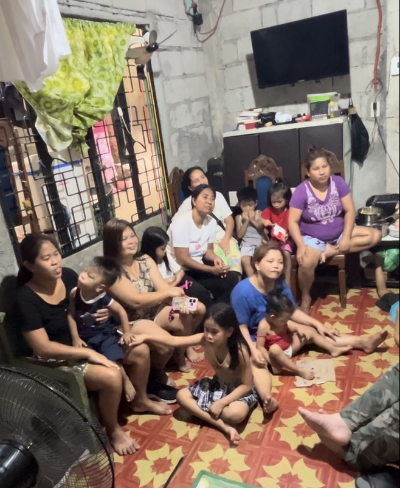

Playlists

Children's Church (Philippines)
These Children’s Church Services in the Philippines are joyful, powerful moments — teaching the next generation about Jesus with songs and stories.
Adult Church Services (Philippines)
Powerful gatherings where the Word is proclaimed with boldness — times of worship, conviction, and life change.

Full Length Sermons
Deep, convicting messages designed to strengthen and equip.

Micro Devotions
Micro Devotions are 30 to 40 second, Bible-based messages designed to pierce through the noise of daily life and draw your heart back to the feet of Jesus.
Daily Devotions
These Daily Devotions are more than gentle reflections; they are spiritual wake-up calls. In 3–4 minutes each, they examine the heart, align us with God’s Word, and call believers to live with...
My Philippine Adventures
Everyday life, community, and the beauty of the islands — short videos and highlights from life in the Philippines.